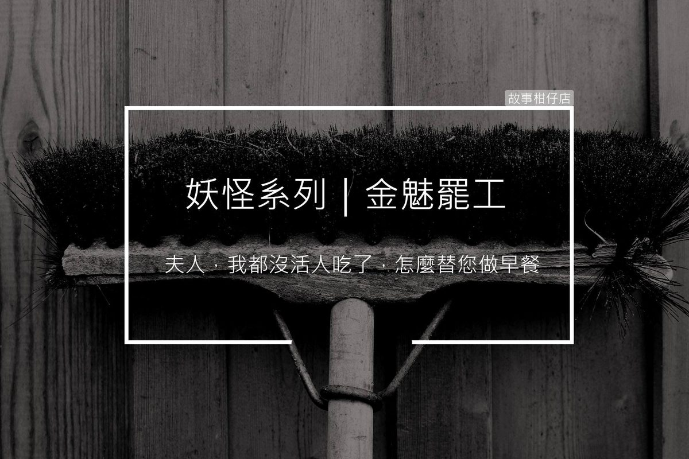

金魅罷工

剪溜：你們的工會組織最常進行的抗議活動是？
金魅：現在我們醞釀新一波抗議計畫......
〈金魅罷工〉
〔罷工第一天〕
傅太太伸了個懶腰走近空無一物的餐桌，她氣得大喊：「金魅！我的早餐呢？」
蹲在角落的金魅幽幽地說：「夫人，我都沒活人吃了，還替您做早餐？」
〔罷工第二天〕
傅太太看見水槽內堆著一落髒碗盤，立刻轉頭咆哮：「金魅，妳沒洗碗！」
金魅幽幽地說：「我得吃飽了，才有力氣洗碗。」
〔罷工第三天〕
一早傅太太就出門了，傅先生到外地出差還沒回家，金魅蹲在角落面對著牆壁。
她緊揪著抹布，努力壓抑想擦地板的衝動，邊喃喃提醒自己：「不能轉頭、不能轉頭……」深怕一轉頭，看見客廳地板的一層灰，自己又會火速擦得啵亮。
原來爭取權益這麼痛苦啊……靠著那團幾乎被扯爛的抹布，金魅順利撐過第三天。
〔罷工第四天〕
「我說金魅，幹嘛這麼不近人情呢？」傅太太好聲好氣地說，「有事好商量，傅先生後天就回來了，妳趕緊打掃乾淨，好嗎？」
金魅憋著氣，深怕聞到傅太太衣服沒洗乾淨的臭噗味，「夫人，您一年給十個活人吃，才能商量。」
傅太太氣沖沖離去，金魅才鬆了一口氣。她差點就要扒下傅太太的衣服洗個徹底。
〔罷工第五天〕
傅太太正嘗試著掃地，卻連掃把都拿不好，手一滑還捅到花瓶，砸了一地碎片。慌亂地要找畚箕，手指不慎被割傷。
依舊蹲在角落的金魅捂緊耳朵，一聽就知道滿地狼藉，她真想趴在地上將卡在縫隙的碎片一一清乾淨。
〔罷工第六天〕
大門傳來聲響，傅先生回來了。
金魅轉過身來，準備跟傅先生堅定表達訴求。
滿身酒氣的傅先生疑惑問：「金魅，妳幹嘛？……嘔～～～」
很突然地，傅先生吐了一地，伴隨著酸腐氣味的嘔吐物攤在地板，就在金魅眼前。
一眨眼的時間，金魅已備好水桶、抹布和清潔劑。
罷工行動正式宣告結束。
天靈靈、地靈靈、妖魔鬼怪都裝瓶！
鬼怪酸甘甜，都在故事柑仔店～
★ 更多的金魅
極短篇：
人物專訪：